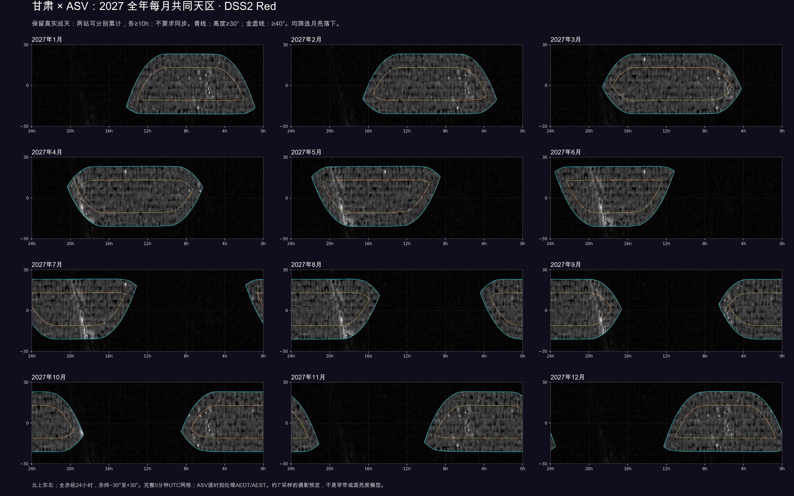
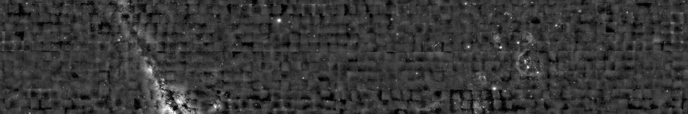

每月共同天区，直接在 DSS2 Red 上自己选
甘肃 × ASV St Arnaud · 2027年1—12月。亮区保留真实巡天，暗区不满足当前条件。默认允许两站分别累计；可切换真正同时窗口。
亮区：两站各自都达到门槛，可分别累计
正在准备真实DSS2 Red底图…
━ A：51.26′ × 28.98′┄ B：50.51′ × 33.74′━ C：145.59′ × 82.32′点击后显示三个真实视场；框线不代表实际分辨率。
已选0处
点击任意位置，查看该月两站时长、真正同时小时和构图。
放大后稍等数秒，在线加载真实DSS2 Red高清瓦片；网络不可用时保留内置广域预览。候选只在当前页面内积累，关闭前请导出CSV。
查看全年十二个月总览与单月大图
默认：高度≥30°、月亮落下、两站各≥10小时。青线为30°可选区，金虚线为40°优选区。



来源、计算与复算说明144层时长WCS FITS各条件覆盖面积
